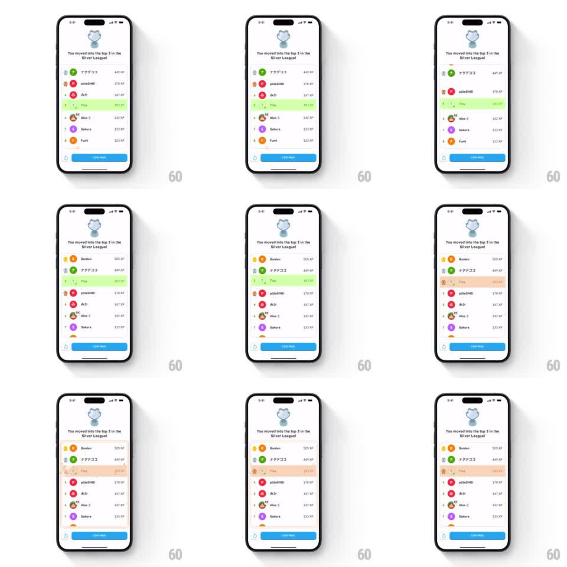

Media
Frame-by-frame

Rebuild this animation 1:1: Duolingo's league climb - on the "You moved into the top 3" leaderboard, the user's highlighted row slides up past the rows it beat, which shuffle down to make room, ending in the top-3 zone with a new highlight color.

Rebuild this animation 1:1: Duolingo's league climb - on the "You moved into the top 3" leaderboard, the user's highlighted row slides up past the rows it beat, which shuffle down to make room, ending in the top-3 zone with a new highlight color. ## Integration Integration: stack-agnostic spec - springs given as stiffness/damping, timed motions as duration + curve; map every value to your framework and animation library of choice. ## Scene Duolingo's league result screen: a league badge and "You moved into the top 3 in the Silver League!" up top, a ranked list of player rows (rank number, avatar, name, XP), and a blue continue button. The user's row "Tiny" starts highlighted green at rank 7. It slides upward through the list to rank 3 as the displaced rows shift down, and its highlight shifts to the orange top-3 zone color. ## Motion spec Pattern: leaderboard rank climb, ~1.8s total. - The user row lifts: it scales up slightly (1.02) and raises its shadow, detaching from the list (150ms). - It slides up row by row; each passed row slides down into the vacated slot (spring stiffness 320 damping 26, staggered 120ms per rank) - the climb reads as a series of overtakes, not one teleport. - The rank numbers tick down on the user row (7 to 3) as it passes each opponent. - Landing at rank 3, the row settles (spring stiffness 380 damping 22), the highlight crossfades green to orange (300ms), and a small confetti puff fires from the row (~15 pieces, 600ms). - Other rows keep their order otherwise; the continue button stays put. ## Calibration - The overtakes are sequential - each rank change gets its own beat. - The user row is always on top of the rows it crosses. ## Reduced motion Rows fade into their final order. ## Don't miss - The highlight color change marks the zone crossing (promotion), not just the move. - XP values never change - only positions.